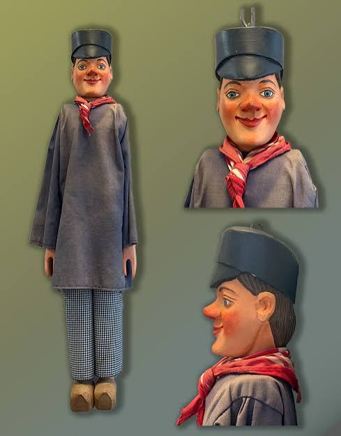

CityLoop Quest Liège


Lambert reste la figure fondatrice du récit liégeois. Qu’on l’aborde par l’histoire ou par la tradition, son assassinat et son culte expliquent l’importance du sanctuaire autour duquel la ville médiévale s’est structurée. Sans lui, la place Saint-Lambert n’aurait pas la même charge symbolique.
Érard de La Marck, prince-évêque de la Renaissance, marque la ville par son ambition politique et architecturale. Le palais reconstruit à partir du XVIe siècle donne encore aujourd’hui une image forte de ce pouvoir. Il incarne une principauté qui regarde vers l’Italie, l’Empire et les grandes cours européennes.
André-Modeste Grétry, né en Outremeuse en 1741, porte Liège sur les scènes européennes. Compositeur d’opéras-comiques, il devient une célébrité à Paris, tout en gardant une présence affective dans sa ville natale. Son musée et sa statue rappellent cette circulation entre quartier populaire et culture savante.
Plus près de nous, les ingénieurs, ouvriers, artistes, professeurs et militants ont aussi modelé Liège. John Cockerill, les verriers du Val Saint-Lambert, les chercheurs de l’Université ou les créateurs du théâtre de marionnettes composent une galerie moins monarchique, mais tout aussi décisive pour comprendre l’énergie locale.